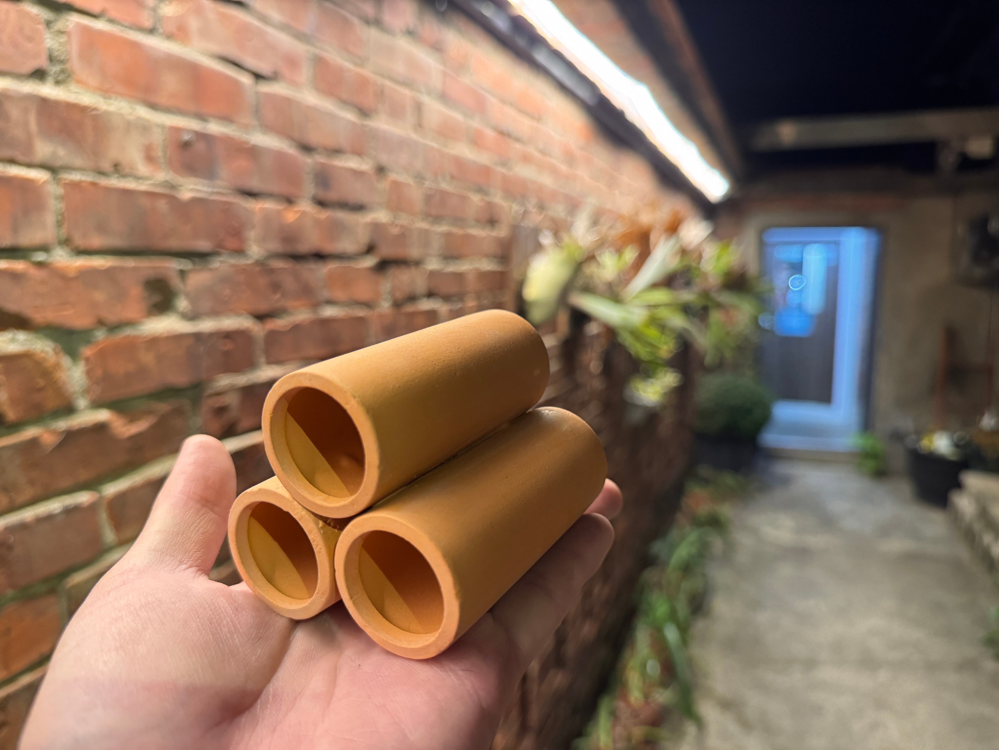

水族用品｜新竹新埔宇魚水族
藏身小物-三孔蝦管
現貨供應中NT$ 80 起
【宇魚水族】陶瓷多孔蝦管 蝦隻躲避與培菌的最佳空間，打造安心繁衍環境 觀賞蝦在脫殼或是受到驚嚇時，非常需要一個能躲藏的安全港。這款蝦館採用優質陶瓷材質燒製，多孔設計不僅能讓蝦隻自由穿梭、躲避天敵，粗糙的表面更是硝化菌絕佳的附著場所，在提供躲避功能的同時，還能輔助穩定缸內水質。 🔥 產品特色介紹 🔹 安全躲避空間： 專為米蝦、螯蝦設計的多孔結構，提供隱密的躲藏空間，能有效降低脫殼期的死亡率與互相攻擊。 🔹 陶瓷培菌材質： 具備細微孔隙，能讓硝化菌大量定殖，協助分解水中有害物質，維持水質清澈。 🔹 自然美觀造景： 沉穩的色調與簡約的造型，無論是單獨擺放或搭配底石、水草，都能輕鬆融入各式景觀。 🔹 多種規格可選： 提供三孔與六孔兩種規格，可根據缸內蝦隻密度與空間自由組合，疊放效果更佳。
價格、規格與庫存
商品與購買資訊
- 商品編號a30
- 商品分類水族用品
- 門市位置新竹縣新埔鎮義民路二段630巷9號
- 購買方式門市挑選／網站下單；活體提供專業包裝配送
購買注意事項
🔹 下缸前清洗： 陶瓷產品在燒製過程中可能殘留細微粉塵，建議入缸前先用清水簡單沖洗表面。 🔹 擺放平穩： 蝦館堆疊時請確保底座穩固，避免魚蝦挖掘底砂時造成傾倒，壓傷愛蝦。 🔹 定期清除雜質： 若蝦館孔洞內堆積殘餌或排泄物，可在換水時用吸管輕輕吸取，維持內部環境潔淨。 🔹 適合對象： 除了觀賞蝦，也適合小型底棲魚類（如小精靈、小型鼠魚）作為休息站使用。